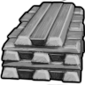
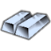
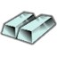

HSK 官方把它归在 Extracted/Metals/PRS(贵重品) 或 Metallic/RARBar 但材质覆盖≤2 的提纯金属——宝石·化石·未加工贵金属·纯铬纯钴纯镍纯钨钒锰钼锌焊锡等,只作收藏/贸易/配方原料与合金添加剂,**不参与能力档阶梯评价**(标 V 级)
电力工业·前期HSK上游补丁×1贵重级·电力工业·纯钴（Co）Cobalt
贵重品·不作材质提纯金属·焊料(合金添加剂) —— 建造/打造清单里不会拿它当材质(覆盖 0 件);当前被 8 条配方当原料消耗
① 起点 · Core_SK 的 Defs 写 Things/Item/Ingot (60,90,120)
 ACore_SK
ACore_SK BCore_SKCCore_SK
BCore_SKCCore_SK② Vile 换成 Things/Item/Material/PureAluminium (200,200,200) ← Alloy_Patch.xml
 aVile's Materials Science
aVile's Materials Science bVile's Materials Science
bVile's Materials Science
cVile's Materials Science③ 生效(终态) Things/Item/Ingot (60,90,120)
 ACore_SKBCore_SK
ACore_SKBCore_SK CCore_SK
CCore_SKThings/Item/Ingot StackCount (60,90,120)被8条配方消耗贴图链 3 段
护甲 —/—/— 利钝 —/— 价值 20 质量 0.45 Bulk 0.45
stuff —
HSK RARBar
产自 Spec: Pentlandite (20 Ni, 15 Fe, 20 Co)(电解精炼厂/Metal processing IV) ; Spec: Sphalerite (15 Zn, 15 Mn, 20 Co)(电解精炼厂/Metal processing IV) ; Smelt cobalt alloy(无工作台)
源 Core_SK
Items_Resource_Alloys_Industrial.xml
电力工业·前期Vile贵重级·电力工业·锰（Mn）Manganese
贵重品·不作材质提纯金属·焊料(合金添加剂) —— 建造/打造清单里不会拿它当材质(覆盖 0 件);当前被 5 条配方当原料消耗
 生效·ACore_SK
生效·ACore_SK
生效·BCore_SK生效·CCore_SKThings/Item/Ingot StackCount (213,232,255)被5条配方消耗
护甲 —/—/— 利钝 —/— 价值 15 质量 0.40 Bulk 0.40
stuff —
HSK RARBar
产自 Adv: Bog Iron (35 Fe, 5 Mn)(金属提炼厂/Metal processing III) ; Spec: Cassiterite (15 Sn, 10 Mn, 15 W)(电解精炼厂/Metal processing IV) ; Adv: Cassiterite (25 Sn, 5 Mn)(金属提炼厂/Metal processing III)
源 Vile's Materials Science
Alloys_Intermediate.xml
电力工业·前期Vile贵重级·电力工业·锌（Zn）Zinc
贵重品·不作材质提纯金属·焊料(合金添加剂) —— 建造/打造清单里不会拿它当材质(覆盖 0 件);当前被 5 条配方当原料消耗
 生效·ACore_SK
生效·ACore_SK
生效·BCore_SK生效·CCore_SKThings/Item/Ingot StackCount (205,240,236)被5条配方消耗
护甲 —/—/— 利钝 —/— 价值 15 质量 0.40 Bulk 0.40
stuff —
HSK RARBar
产自 Spec: Magnetite (25 Fe, 25 Cr, 10 Zn)(电解精炼厂/Metal processing IV) ; Quick: Sphalerite (20 Zn)(金属提炼厂/Metal processing II) ; Spec: Sphalerite (15 Zn, 15 Mn, 20 Co)(电解精炼厂/Metal processing IV)
源 Vile's Materials Science
Alloys_Intermediate.xml